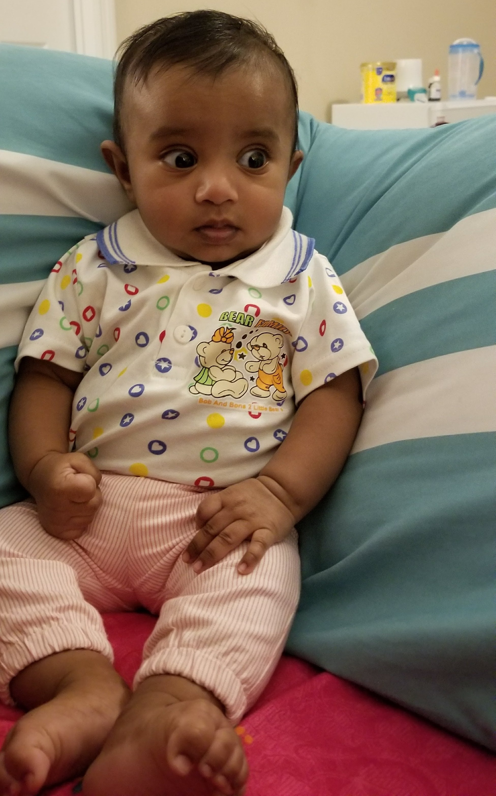
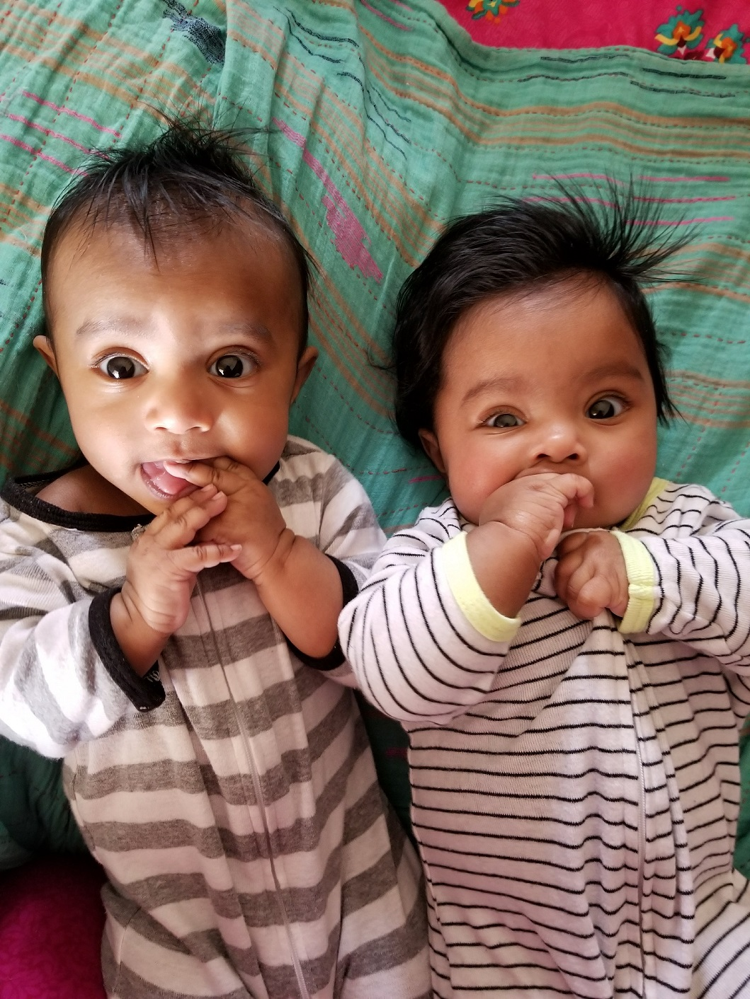
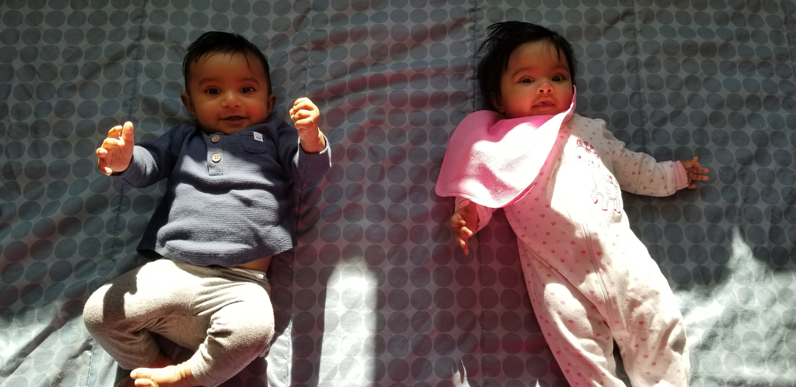

I got two kittens

Two little kittens they lost their mittens,
And they began to cry,
Oh, mother dear, we sadly fear
Our mittens we have lost.

What! lost your mittens, you naughty kittens!
Then you shall have no pie.
Mee-ow, mee-ow, mee-ow.
No, you shall have no pie.

The two little kittens they found their mittens,
And they began to cry,
Oh, mother dear, see here, see here,
Our mittens we have found!
Put on your mittens, you silly kittens,
And you shall have some pie.
Purr-r, purr-r, purr-r,
Oh, let us have some pie.

The two little kittens put on their mittens,
And soon ate up the pie;
Oh, mother dear, we greatly fear
Our mittens we have soiled.
What! soiled your mittens, you naughty kittens!
Then they began to sigh,
Mee-ow, mee-ow, mee-ow.
Then they began to sigh.

The two little kittens they washed their mittens,
And hung them out to dry;
Oh! mother dear, do you not hear,
Our mittens we have washed!
What! washed your mittens, then you’re good kittens,
But I smell a rat close by.
Mee-ow, mee-ow, mee-ow.
We smell a rat close by.